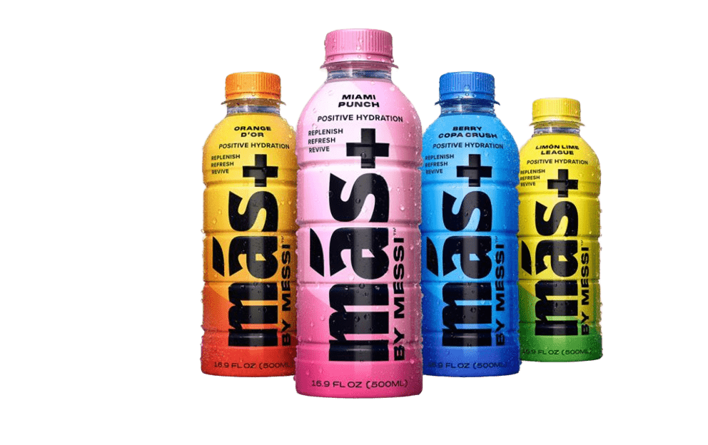

”Quería una bebida que tuviera los ingredientes que necesito y un sabor increíble. Sin comprometer la calidad de los ingredientes. Por eso, quise crear mi propia bebida.”
Más=Messi
-¿Cómo empezó esto?
Frase del fundador Leo Messi
ADIDAS
La colaboración entre Lionel Messi y Adidas ha sido un fenómeno global que ha trascendido el ámbito deportivo.Desde su debut con el FC Barcelona en 2004,Messi ha sido un embajador principal de la marca,generando campañas publicitarias de gran impacto.
En 2017 se firmó un contrato vitalicio que consolidó su asociación para toda lacarrera del futbolista,asegurando su presencia en lascampañas de Adidas y refuerzando su posición en el mercado global.
Messi ha sido clave en el diseño de varios modelos de zapatillas Adidas,incluyendo el Adizero Messi 2025,que combina tecnolgía an¿vanzada con un estilo atractivo.Además,Messi Originals,en colaboración con Adidas,ha redefinido el concepto de athleisure,combinando el mundo del deporte y la moda para cautivar a los mercados de USA y Latinoamérica.La colaboración también incluye lanzamientos exclusivos y campañas dirigidas a estas regiones clave,destacando el compromiso de Messi con el medio ambiente y el consumidor consciente en su colección Messi Originals.
Argentina.messi.ar